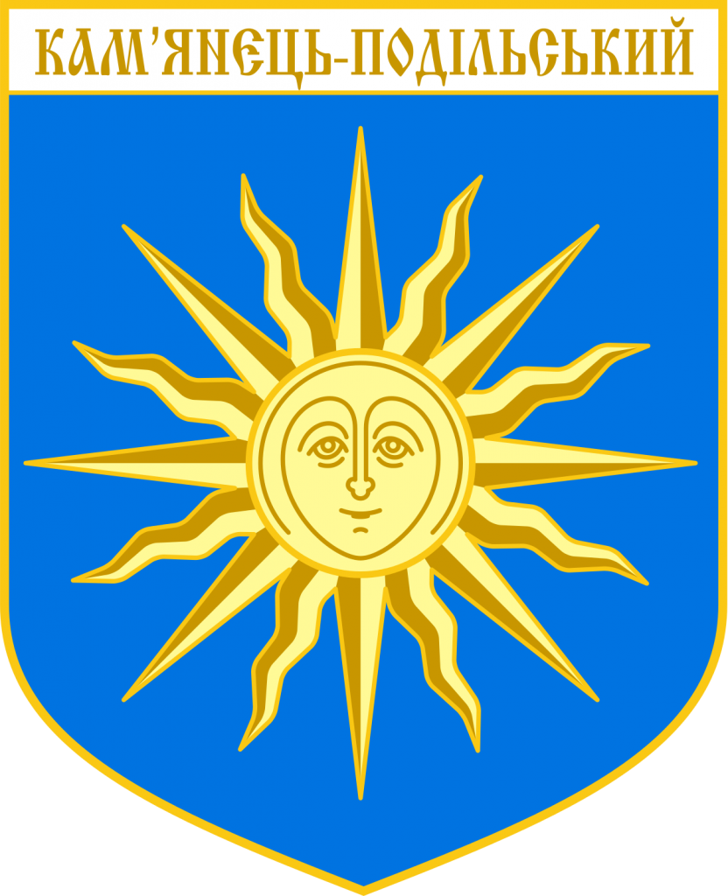

 За археологічними джерелами, виникнення Кам’янця датується XII століттям. Спочатку місто було у складі Київської Русі, потім перейшло до Галицько-Волинського князівства. У 1240 році Кам’янець захоплюють монголо-татари і володіють ним до 1362 року. Тоді його відвойовує військо великого князя Литовського Ольгерта, який передає територію своїм племінникам – братам Коріатовичам. У 1434 році Кам’янець переходить у володіння Речі Посполитої, з невеликим тимчасовим проміжком входження до складу Османської імперії (1672–1699). У цей період місто набуває величезного стратегічного значення, стаючи центром польського воєводства і набуваючи статус королівського міста. У 1793 року Кам’янець-Подільський приєднано до Російської імперії, а вже в 1795 році він став центром Подільської губернії. Під час Радянсько-української війни (1917–1923) тут багаторазово змінювалася влада. З лютого 1919 до листопада 1920 року, після евакуації уряду Української Народної Республіки з Києва, Кам’янець-Подільський навіть стає столицею УНР. Пізніше, з 1937 до 1941 року місто було центром Кам’янець-Подільської області. Герб Кам’янця-Подільського Герб Кам’янця-Подільського У наш час місто надзвичайно цікаве для туристів – Національний історико-архітектурний заповідник «Кам’янець» входить у список «Семи чудес України» та має в своєму складі більше півтори сотні пам’яток архітектури. Крім того, тут часто відбуваються різноманітні культурні заходи, етнографічні, історичні та музичні фестивалі. Популярними є фестивалі повітроплавання та військово-історичної реконструкції, що проходять кілька разів на рік та приваблюють тисячі туристів.
 Однозначно, головною візиткою міста є фортеця – вікова твердиня, збудована для захисту міста на стрімких берегах Смотрича. Нині всі укріплення Кам’янця поділяють на дві категорії – замок і міські фортифікації. Власне замок складається з двох частин: старого замку з мурами та баштами і нового замку з земляними валами та ровами. Фортеця була збудована до появи вогнепальної зброї, тому башти замку та міста були повністю кам’яними та мали кам’яні верхи, а сучасні дахи башт були прилаштовані значно пізніше. Довгий час вважалося, що Стару фортецю було збудовано у другій половині XIV століття – перша згадка про Кам’янецький замок зустрічається у грамоті від 7 (15) січня 1374 . Проте комплексні архітектурні та археологічні дослідження датують її заснування XI–XII століттями. Спочатку це була дерев’яна оборонна споруда, а в XVI столітті дерев’яні укріплення замінили на кам’яні. Віками фортеця Кам’янець–Подільського була нездоланною. Одна з легенд свідчить, що коли в 1621 році хан Осман зі своїм військом підійшов до міста і побачив стіни фортеці, то здивувався їхній міцності. Хан запитав, хто побудував це диво. Йому відповіли: «Аллах». Тоді Осман вигукнув: «Нехай аллах і бере її» та відступив. Лише двічі за всю свою історію фортецю захоплювали: 1393 року литовський князь Вітовт, а 1672 року – численне турецьке військо, яке пробуло тут до 1699 року. Кам’янець–Подільська фортеця втратила своє оборонне значення лиш після закінчення російсько–турецької війни у 1812, коли кордони Російської імперії значно розширилися на південь. Тоді фортеця виконувала роль виправного закладу, проте, перша світова війна знову нагадала про її військове призначення – в Кам’янці знаходився штаб Південно–Західного фронту. До нашого ж часу Кам’янець–Подільська фортеця збереглась дуже добре. Стара фортеця займає 1,5 гектари та являє собою одинадцять башт, розташованих у формі неправильного чотирикутника і сполучених кріпосними стінами
Однозначно, головною візиткою міста є фортеця – вікова твердиня, збудована для захисту міста на стрімких берегах Смотрича. Нині всі укріплення Кам’янця поділяють на дві категорії – замок і міські фортифікації. Власне замок складається з двох частин: старого замку з мурами та баштами і нового замку з земляними валами та ровами. Фортеця була збудована до появи вогнепальної зброї, тому башти замку та міста були повністю кам’яними та мали кам’яні верхи, а сучасні дахи башт були прилаштовані значно пізніше. Довгий час вважалося, що Стару фортецю було збудовано у другій половині XIV століття – перша згадка про Кам’янецький замок зустрічається у грамоті від 7 (15) січня 1374 . Проте комплексні архітектурні та археологічні дослідження датують її заснування XI–XII століттями. Спочатку це була дерев’яна оборонна споруда, а в XVI столітті дерев’яні укріплення замінили на кам’яні. Віками фортеця Кам’янець–Подільського була нездоланною. Одна з легенд свідчить, що коли в 1621 році хан Осман зі своїм військом підійшов до міста і побачив стіни фортеці, то здивувався їхній міцності. Хан запитав, хто побудував це диво. Йому відповіли: «Аллах». Тоді Осман вигукнув: «Нехай аллах і бере її» та відступив. Лише двічі за всю свою історію фортецю захоплювали: 1393 року литовський князь Вітовт, а 1672 року – численне турецьке військо, яке пробуло тут до 1699 року. Кам’янець–Подільська фортеця втратила своє оборонне значення лиш після закінчення російсько–турецької війни у 1812, коли кордони Російської імперії значно розширилися на південь. Тоді фортеця виконувала роль виправного закладу, проте, перша світова війна знову нагадала про її військове призначення – в Кам’янці знаходився штаб Південно–Західного фронту. До нашого ж часу Кам’янець–Подільська фортеця збереглась дуже добре. Стара фортеця займає 1,5 гектари та являє собою одинадцять башт, розташованих у формі неправильного чотирикутника і сполучених кріпосними стінами